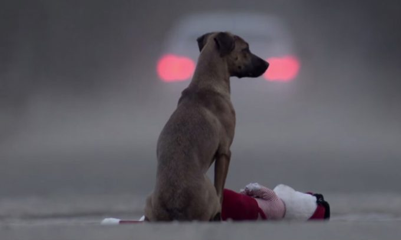

Os animais de rua, geralmente abandonados, vivem à mercê de restos de comida e abrigos que conseguem encontrar para sobreviverem, e estes cães, assim como qualquer outro animal, se reproduzem e o problema é que por falta de alguém para controlar esta população, por exemplo com uma campanha de castração em massa, eles continuam procriando e, desta forma, aumenta-se ainda mais o número de animais abandonados.
Toda cidade tem animais abandonados pelas ruas. Você encontrou um animal abandonado, quer ajudar, mas não tem espaço, condição financeira ou tempo pra cuidar? Veja a seguir algumas dicas e sugestões do que pode ser feito por esses animais:
•ONGs Especializadas:
A maioria das pessoas encaminha os caes e gatos para um abrigo ou ONG, porém deve-se utilizar esta alternativa em último caso, pois as ongs já ajudam muitos animais e tem muitos gastos. o que dificulta uma boa manutenção de todos. E as ONGs que funcionam atualmente muitas vezes já estão lotadas. Então procure ajudar você mesmo a encontrar um novo lar para o cachorro, ou gatinho abandonado, é muito gratificante salvar uma vida.
•Cuidar do animal:
Primeiramente, se for possível, leve o cachorro abandonado ao veterinário, ainda que ele pareça saudável, é importante principalmente se você, mesmo que fique apenas temporariamente com ele, tem outros animais em casa. Vacine. É recomendado fazer a castração do bichinho sendo macho ou fêmea, para a saúde do animal esta é sempre a melhor opção. E animais castrados são mais fáceis de serem adotados.
•Finalmente achar um lar para o animalzinho:
Depois de ter cuidado adequadamente do bichinho, tire fotos, espalhe pela internet, leve-o às feiras de adoção (essas feiras só aceitam animais castrados e vacinados), avise os conhecidos, etc. Na internet muita gente está disposta a adotar um cão e quem não pode, geralmente ajuda a espalhar a notícia. Se cada um fizer sua parte, o mundo pode ser um lugar melhor. Faça o que puder para ajudar ao próximo, mesmo que este próximo tenha quatro patas e focinho!